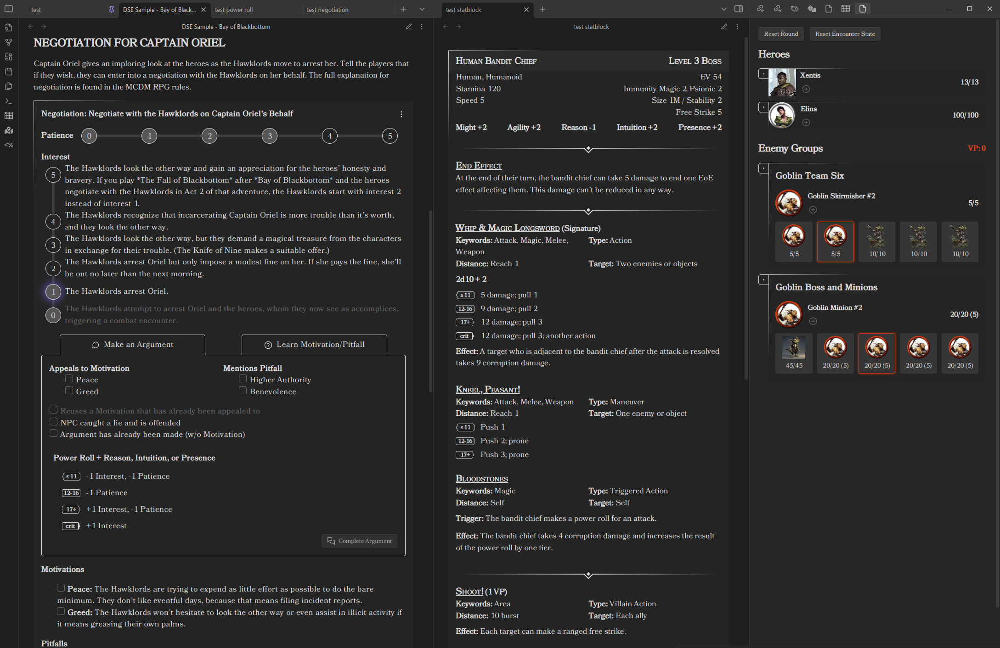

Xentis' Steel Compendium¶
The Steel Compendium is an independent product published under the DRAW STEEL Creator License and is not affiliated with MCDM Productions, LLC. DRAW STEEL © 2025 MCDM Productions, LLC.
This compendium is a suite of tools and resources to support MCDM's Draw Steel TTRPG.
Sites¶
-
Steel Compendium¶
The current Steel Compendium: the full Draw Steel Heroes, Monster, Beastheart, and Summoner books - organized for browsing, reading, and reference.
-
Legacy site (deprecated)¶
The original Compendium site. It is no longer maintained and has been replaced by the current Steel Compendium (v2); it is kept available for now.
Draw Steel Elements Obsidian Plugin¶
Draw Steel Elements is a plugin for Obsidian, a markdown note-taking tool that can be very helpful for TTRPG prep and play.

Draw Steel Data¶
Parsed variants of the Draw Steel rules and bestiary are distributed across several GitHub repos.
There is also an npm module for parsing and working with these models:
-
New data repos¶
Work in progress. These are the new, SCC-coded data repos. They are not yet production-ready -- the structure may change and they may contain errors.
- data-rules -- Heroes book
- data-bestiary -- Monsters book
- data-unified -- everything, aggregated
Each repo provides Markdown, Markdown for the Draw Steel Elements plugin, SCC-linked Markdown, JSON, and YAML variants under its
en/directory. -
Legacy data repos¶
Deprecated. These older repos are still available, but are being replaced by the new repos to the left.
Don't know which markdown to download?
- Using Obsidian with the Draw Steel Elements plugin? Use data-md-dse.
- For any other purpose, use data-md.
Unified (everything):
- data-md -- Markdown
- data-md-dse -- Markdown for the Draw Steel Elements Obsidian Plugin
Rules (Heroes book):
- data-rules-md -- Markdown
- data-rules-md-dse -- Markdown for the Draw Steel Elements Obsidian Plugin
- data-rules-yaml -- YAML
- data-rules-json -- JSON
- data-rules-xml -- XML
Bestiary (Monsters book):
- data-bestiary-md -- Markdown
- data-bestiary-md-dse -- Markdown for the Draw Steel Elements Obsidian Plugin
- data-bestiary-yaml -- YAML
- data-bestiary-json -- JSON
Adventures (not yet populated with data):
- data-adventures-md -- Markdown